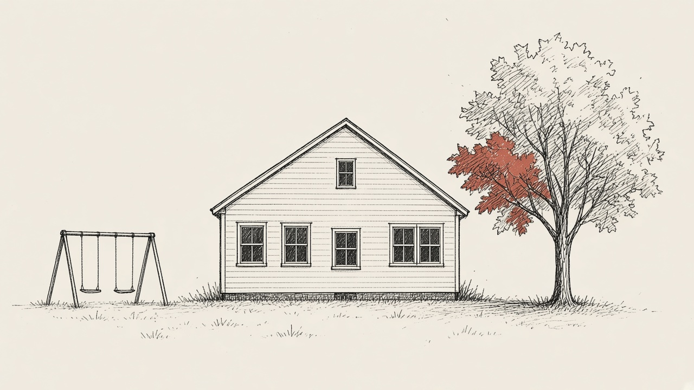

Project tracker
Bath's new elementary school
Last updated
What's happening
RSU 1 is planning a new elementary school to replace Dike-Newell School, which was badly damaged by fire in 2022. The state has said it intends to fund the project through its major capital school construction program. A site has not been chosen. In August the board dropped land behind Bath Middle School and kept the former Dike-Newell site on Wright Drive, plus one other property, under study. A public meeting is set for Dec. 7 at 6 p.m., and a referendum is aimed at June 2027.

The timeline
How the plan has moved
-
2022
Fire damages Dike-Newell School
News coverage at the time said the Bath elementary school was badly damaged by fire. Students were moved to temporary space while the district sought a lasting replacement.
-
Nov. 13, 2025
The state lists Dike-Newell for construction funding
The Maine Department of Education's approved projects list for the 2024-25 rating cycle names Dike-Newell School in RSU 1 as the first project it intends to fund. The same day's priority list ranks it first, with 143.16 points.
-
January 2026
The board hires an architect
Our School Board says the board hired Lavallee Brensinger on Jan. 28, 2026, to design a replacement for Dike-Newell School.
-
Aug. 24, 2026
The middle school site is dropped
Our School Board, quoting the board's Aug. 24 minutes, says "the Middle School site is no longer on the table" and that the project is "on schedule for a June 2027 referendum." Its summary says the former Dike-Newell site on Wright Drive and one other property remain under study.
-
Oct. 26, 2026
A December public meeting is named
Our School Board, quoting an Oct. 26 board recording, reports a public meeting set for "December 7th right now at 6:00."
-
Next Dec. 7, 2026
Public meeting on the new school
6 p.m. The recording excerpt published by Our School Board does not name a place. Regular RSU 1 board meetings are at Morse High School at 6 p.m. unless otherwise noted; Dec. 7 is not on the district's posted regular-meeting list.
-
Late November or early December 2026
A site choice is expected
Our School Board's Oct. 29 summary says site selection is expected in late November or early December.
-
Early 2027
A straw poll is planned
The same Our School Board summary says a straw poll is planned for early 2027. A specific date has not been posted.
-
June 2027
A referendum is aimed for this month
The Aug. 24 minutes, as quoted by Our School Board, say the project is on schedule for a June 2027 referendum. A calendar date inside that month has not been posted.
-
About 2029
Target occupancy
Our School Board's Oct. 29 summary puts occupancy at about 2029. That year is from the summary, not from a provided excerpt of the minutes.
Next
Public meeting Mon., Dec. 7, 6:00 p.m.
Listed by Our School Board from an Oct. 26, 2026 board recording as a public meeting on the new school. The excerpt does not name a location.
The plan
Key points
Next meeting
Dec. 7
Public meeting, 6 p.m. Location not posted.
Aimed vote
2027
Referendum targeted for June.
A site has not been chosen, and nothing about the referendum has been scheduled as a specific day.
- Would replace Dike-Newell School, badly damaged by fire in 2022
- The state has named Dike-Newell as a project it intends to fund
- Land behind Bath Middle School is no longer under consideration
- The former Dike-Newell site on Wright Drive and one other property remain under study
- Lavallee Brensinger is the architect, according to Our School Board
- A local share, if any, would go to voters with the project
The stakes
Who decides
RSU 1 Board of Directors
The seven-member board for Bath, Arrowsic, Phippsburg, and Woolwich is handling site work and the path to a referendum. Regular meetings are at 6 p.m. at Morse High School unless the district notes otherwise.
Voters in the district
Our School Board says the site choice and any local share of the cost would go to voters in Bath and the other towns. It also says Phippsburg families may be asked whether Phippsburg Elementary should join the new school.
What's being decided
Where to build, and later whether voters approve the project and any local cost. The state's approved-projects list names Dike-Newell School. In November 2025, Superintendent Patrick Manuel told the Maine Monitor the district aimed to put Fisher-Mitchell and Dike-Newell students under one roof. Our School Board's 2026 summaries describe a replacement for Dike-Newell and do not repeat that combination in so many words.
Gaps
Not yet available
- The official BoardDocs minutes file for Aug. 24, 2026 (the site returned an error when opened here)
- A location for the Dec. 7 public meeting
- The name or address of the second property still under study
- A specific date in June 2027 for the referendum
- A date for the early 2027 straw poll
- A published cost, or the size of any local share
- Whether the district still plans to combine Fisher-Mitchell students into the new school, as the superintendent described in November 2025
- Independent 2026 coverage of the site process from the Press Herald, the Times Record, or News Center Maine
- The result of site selection
Records
Details and sources
- The Maine Department of Education's Major Capital School Construction Program approved projects list, dated Nov. 13, 2025, names "RSU 1 - LKRSU, Dike-Newell School" as priority 1 and "RSU 33/MSAD 33, Dr. Levesque Elementary/Wisdom Middle High" as priority 2. The document says the commissioner recommended, and the State Board of Education designated, those projects from the final priority list as the ones it intends to fund for the 2024-25 rating cycle.
- The same day's final priority list ranks Dike-Newell School first, with 143.16 points. Fisher-Mitchell School appears separately at rank 26, with 103.24 points.
- News Center Maine published a Maine Monitor report on Nov. 20, 2025 (updated Nov. 21) saying the state planned to fund only the first two priority schools, including "the Dike Newell elementary school in Bath that was badly damaged by an arsonist in 2022." Superintendent Patrick Manuel said the district was "thrilled," had begun advertising for architectural and engineering services, and aimed to combine Fisher-Mitchell and the students who were at Dike-Newell under one roof.
- Our School Board's Oct. 29, 2026 article, drawing on the Aug. 24, 2026 minutes and an Oct. 26, 2026 recording, says RSU 1 is planning a state-funded school to replace Dike-Newell, with Lavallee Brensinger as architect; that land behind Bath Middle School is no longer being considered; that the former Dike-Newell site on Wright Drive and one other property remain under study; that site selection is expected in late November or early December; that a straw poll is planned for early 2027; that a referendum is targeted for June 2027; that occupancy is about 2029; and that a public meeting is set for Dec. 7 at 6 p.m. It quotes the minutes as saying "the Middle School site is no longer on the table" and that the project is "on schedule for a June 2027 referendum," and quotes the recording as saying "December 7th right now at 6:00 ... a public meeting."
- Our School Board's RSU 1 overview says the board hired Lavallee Brensinger in January 2026 (its project timeline lists Jan. 28, 2026); that a site decision is expected in late 2026; that Phippsburg could choose to join the new school; and that funding is the state major capital program plus a possible local share, subject to a referendum. It describes RSU 1 as serving Bath, Arrowsic, Phippsburg, and Woolwich, with a seven-member Board of Directors.
- The RSU 1 website lists regular board meetings at 6 p.m. at Morse High School unless otherwise noted. The posted dates include Monday, Nov. 23, 2026, and Monday, Dec. 14, 2026. Dec. 7 does not appear on that regular-meeting list.
- The official BoardDocs pages tried for RSU 1 minutes returned an error (HTTP 403) on Nov. 10, 2026, so the August minutes were not read firsthand. The Bath edition of The Maine Ledger had the same problem and relied on Our School Board's excerpts.
- A search of the Press Herald, the Times Record, and News Center Maine on Nov. 10, 2026, did not turn up 2026 coverage of the site choice, the Dec. 7 meeting, or the June 2027 referendum target. Press Herald coverage from 2022 and 2023 described the fire and an earlier appeal for state help.
- Maine DOE approved projects list, Nov. 13, 2025
- Maine DOE final priority list, Nov. 13, 2025
- News Center Maine / Maine Monitor, Nov. 20, 2025
- Our School Board, Oct. 29, 2026
- Our School Board, RSU 1 overview
- RSU 1 board meeting dates and locations